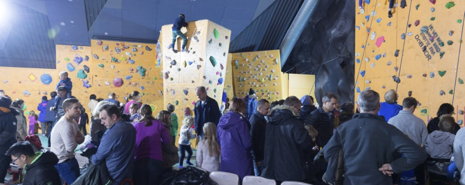
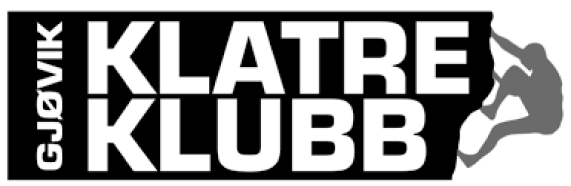

Our climbing community at Fjellhallen is made up by climbers who share
a common passion for adventure and vertical exploration. Within our
walls, climbers of all skill levels come together to make connections,
exchange tips, and celebrate the shared joy of rock climbing. It's a
welcoming space where beginners find encouragement from seasoned
climbers, and where experienced climbers discover new challenges to
conquer.

Statement from a climbing member
Transcription
[Hollow background noise]
"Sebastian, what do you think about the climbing wall at
Fjellhallen?"
"The climbing wall is really nice and now that we've set some new
routes it's really interesting again."
Climbing groups at fjellhallen

Gjøvik Climbing Club
Gjøvik climbing club was established in 2003 by keen climbers in
Gjøvik who wanted a better organization of climbing activities. The
number of members and active climbers has multiplied since the club
was started. Gjøvik climbing club offers courses both indoors and
outdoors for beginners and technique courses for beginners and
established climbers.
Grad-9 student climbing club
"Climbing-group grade 9"(Klatregruppa grad 9) is a student group at
NTNU Gjøvik, which gets together to climb every Tuesday & Thursday.
We host belaying/lead courses during the semesters. If you want to
sign up, talk to one of the board members and we will start planing
a course. We have climbing equipment, which can be lended for free
if you are a member of SiT-Gjøvik/NTNUi-Gjøvik.